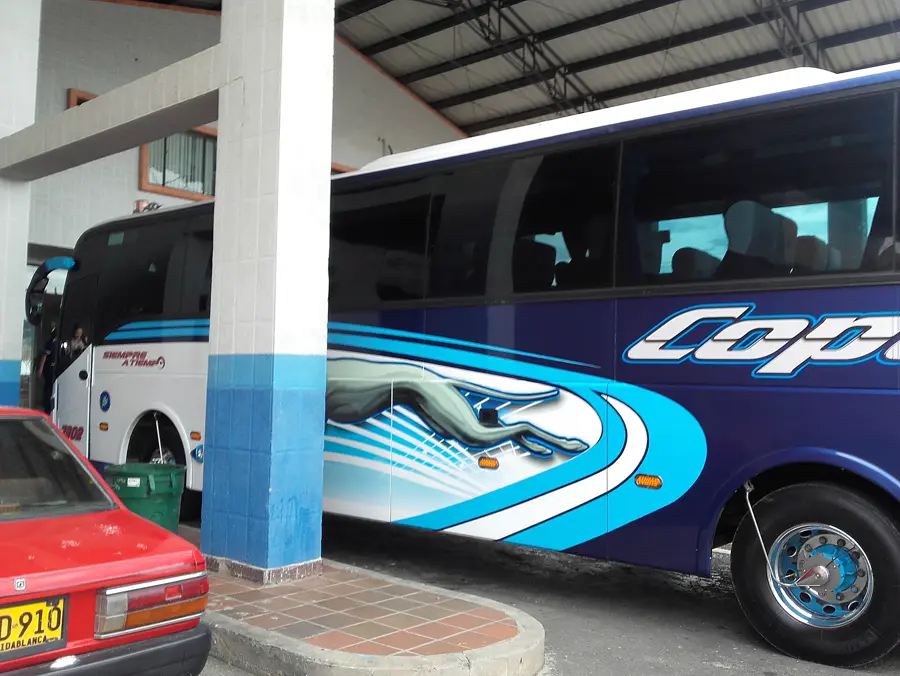
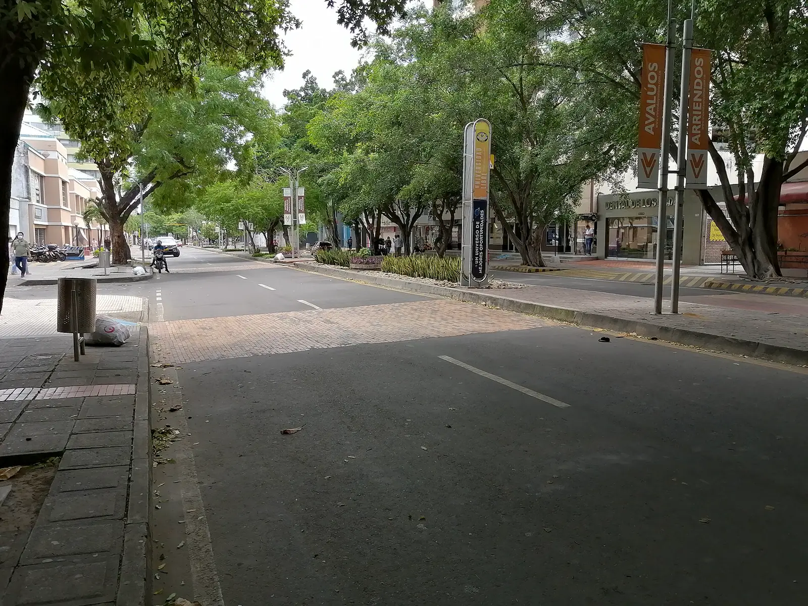
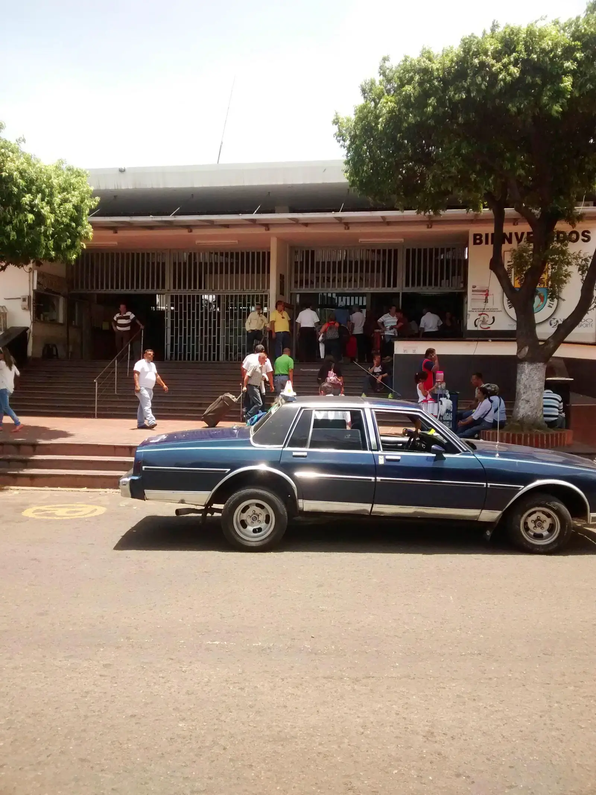
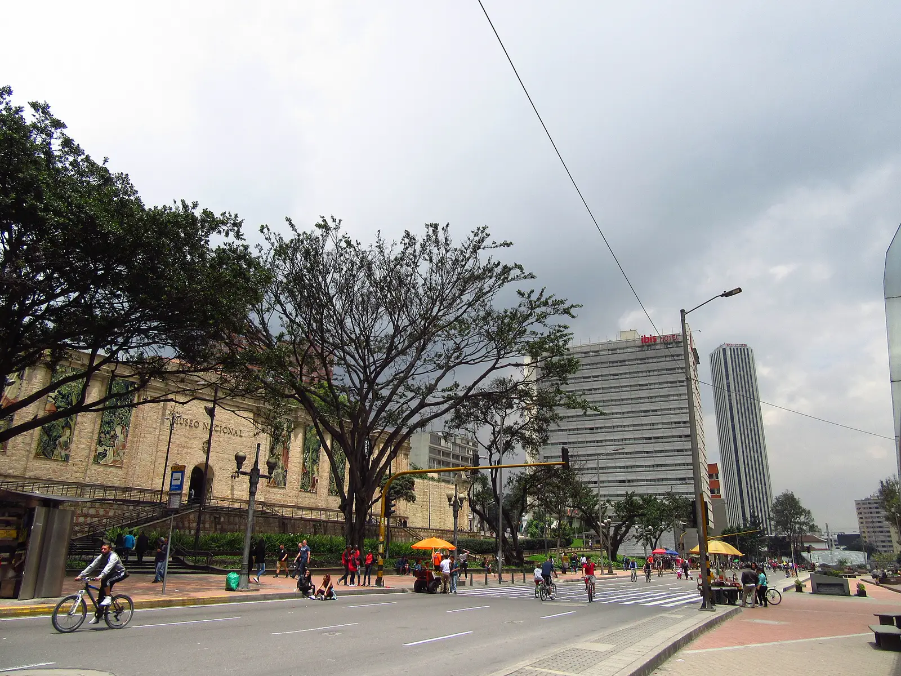
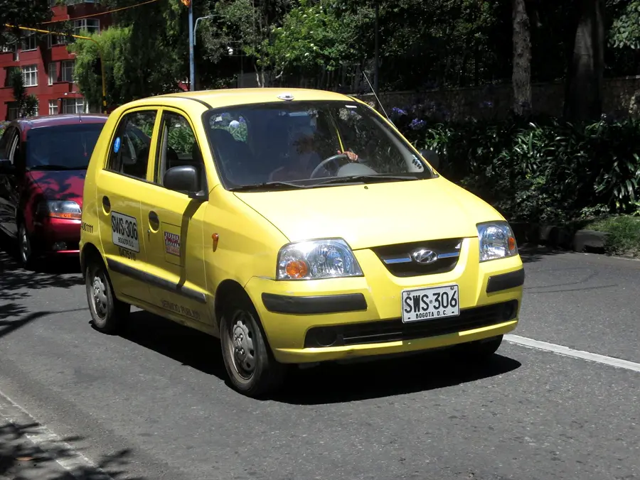
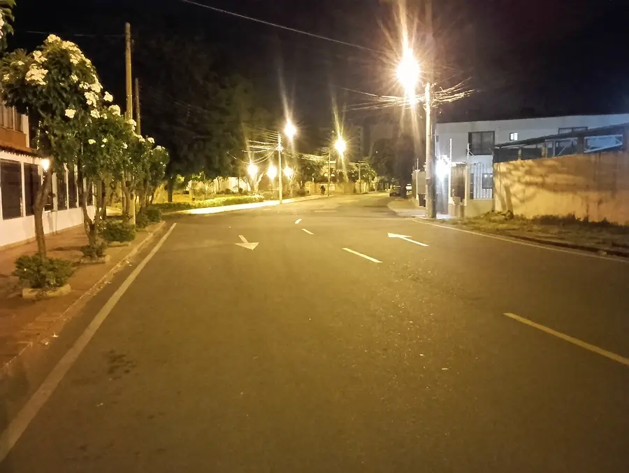

Rutas universitarias
49 de los 71 usuarios de bus tardan más de 40 minutos. Una ruta directa desde los municipios con más estudiantes reduciría los viajes largos.
Las distribuciones binomial, normal y muestral aplicadas a los tiempos de desplazamiento de 250 estudiantes. Cada cálculo va paso a paso con la tabla Z, y puedes cambiar los valores para ver cómo responde cada modelo.
Cada registro es un estudiante, con su medio de transporte, municipio, programa y los minutos que tarda en llegar. El tiempo de desplazamiento conecta las tres distribuciones y el evento que más nos interesa es tardar más de 40 minutos.
El bus concentra 49 de los 66 viajes de más de 40 minutos. Por eso el evento "tardar más de 40 min" está muy ligado al transporte público.
¿Cuántos de 5 estudiantes tardan más de 40 minutos en llegar?
Seleccionamos 5 estudiantes al azar de la base, con reemplazo, y contamos cuántos tardan más de 40 minutos. Ese conteo X solo puede valer 0, 1, 2, 3, 4 o 5, así que es una variable discreta.
Siempre hacemos n = 5 selecciones de estudiantes.
Cada estudiante tarda más de 40 minutos (éxito) o 40 minutos o menos (fracaso).
p = 66/250 = 0,264 en cada selección, porque devolvemos el registro antes de la siguiente.
Al seleccionar con reemplazo, un resultado no cambia la probabilidad del siguiente.
Nos interesa X, el número de estudiantes con viaje largo entre los 5.
Elige una pregunta del caso o arma la tuya. Puedes cambiar n, el umbral de minutos y el grupo de estudiantes; p se recalcula con la base real.
Cada selección toma un estudiante real de la base. Repite el experimento muchas veces y compara lo simulado con la fórmula: los puntos se acercan a las barras.
El valor más probable es X = 1 (38,73 %). La probabilidad de encontrar al menos uno con viaje largo en 5 selecciones es 78,40 %, mucho mayor que el 26,4 % de un estudiante individual: cada selección es una nueva oportunidad de que aparezca.
Si se arma al azar un grupo de trabajo de 5 estudiantes, lo esperado es que al menos uno llegue después de más de 40 minutos de viaje. Entre usuarios de bus, p sube a 0,69 y el problema es mucho mayor.
Suponemos selección con reemplazo y p constante. Sin reemplazo el modelo exacto sería la hipergeométrica, aunque con 250 registros y n = 5 la diferencia es pequeña. Además, p cambia mucho según el medio de transporte.

¿Qué tan probable es cada tiempo de viaje?
Ahora la variable es el tiempo de un estudiante, que puede tomar cualquier valor dentro de un intervalo. Con la media y la desviación estándar de la base construimos la campana y calculamos áreas con Z = (X − μ) / σ.
Escribe los minutos o usa las preguntas del caso. El área sombreada es la probabilidad.
Debajo del eje se ven los minutos (X) y su valor estandarizado (Z), como en los ejemplos de clase.
Las barras son los 250 tiempos reales; la línea roja es la cantidad de estudiantes que predice la normal en cada intervalo de 5 minutos.
El modelo sobreestima los viajes de más de 40 minutos (32,64 % frente a 26,40 % real) y subestima los de 20 a 40. La normal es una aproximación: incluso asigna 0,39 % a tiempos negativos, que no existen.
Cuando n es grande, la binomial se parece a una normal con μ = np y σ = √(npq). Como X es discreta, se corrige con ±0,5. Se necesita np ≥ 5 y nq ≥ 5; con n = 5 no se cumple (np = 1,32), por eso usamos un grupo más grande.
Según el modelo, 54,01 % de los estudiantes tardaría entre 20 y 40 minutos y 37,07 % 30 minutos o menos. Para más de 40 minutos el modelo da 32,64 %, mientras que en la base son 26,40 %.
Con solo la media y la desviación podemos estimar cualquier intervalo, por ejemplo la probabilidad de un viaje de más de una hora, sin revisar registro por registro. Sirve para dimensionar cuántos estudiantes necesitarían rutas alternativas.
Los tiempos reales no son perfectamente simétricos: dependen del medio, la distancia y el tráfico. El bus forma un grupo de viajes largos (46 min en promedio) que una sola campana no describe bien.

¿Cuánto cambia el tiempo promedio entre grupos de 36 estudiantes?
Tomamos muestras de 36 estudiantes sin reemplazo y calculamos el tiempo promedio de cada una. Los promedios varían mucho menos que los tiempos individuales y, por el Teorema del Límite Central, su distribución se acerca a una normal.
¿Por qué σ = 12,85 y no 12,88? En la parada 2 usamos los 250 registros como muestra para estimar la desviación (dividimos entre 249). Aquí los 250 son la población completa de la que sacamos las muestras, así que usamos la desviación poblacional (dividimos entre N = 250), como en el ejemplo de clase.
Cada punto es un estudiante, coloreado según su tiempo. Al tomar una muestra se marcan sus estudiantes y su promedio cae en el histograma de la derecha.
Probabilidad de que el promedio de una muestra caiga en un intervalo. Usa el n y el factor de corrección elegidos arriba.
Las medias se concentran alrededor de 34,24 min. Su dispersión (σx̄ ≈ 1,99 min) es unas 6 veces menor que la de los tiempos individuales. Con las 20 medias del grupo, la desviación observada fue 1,90, muy cerca de la teórica.
Si la universidad mide el tiempo promedio de un grupo de 36 estudiantes y obtiene más de 40 minutos, sería muy raro por azar (0,19 %). Ese resultado indicaría un grupo con un problema real de movilidad, por ejemplo usuarios de bus de un mismo municipio.
Las probabilidades usan la aproximación normal del TLC (n = 36 > 30). La corrección finita se aplica porque conocemos N = 250 y la muestra supera el 5 % de la población. Los resultados describen esta base, no a todos los universitarios de la ciudad.

Los resultados no se contradicen: cada distribución responde una pregunta diferente.
| Distribución | Variable | Pregunta que responde | Resultado clave | Condición para usarla |
|---|---|---|---|---|
| Binomial | X = estudiantes (de 5) con viaje > 40 min | ¿Cuántos de un grupo pequeño tendrán viajes largos? | P(X ≥ 1) = 78,40 % | Ensayos independientes, p constante |
| Normal | X = tiempo de un estudiante | ¿Qué tan probable es un tiempo para una persona? | P(X > 40) = 32,64 % | Datos aproximadamente acampanados |
| Muestral | x̄ = promedio de 36 estudiantes | ¿Qué tan lejos de μ puede quedar el promedio de un grupo? | P(30 ≤ x̄ ≤ 40) = 98,19 % | TLC (n > 30) y corrección finita |

49 de los 71 usuarios de bus tardan más de 40 minutos. Una ruta directa desde los municipios con más estudiantes reduciría los viajes largos.

Conectar a quienes viven en el mismo municipio y tienen vehículo propio con quienes dependen del transporte público.

En un grupo de 5 estudiantes, la probabilidad de que al menos uno tenga un viaje de más de 40 minutos es 78,40 %. Ajustar el inicio de clases reduciría las llegadas tarde.
Cada distribución tiene condiciones. Antes de aplicar una fórmula hay que identificar la variable (discreta o continua) y comprobar que el modelo se ajusta a la situación.
La binomial cuenta casos en un grupo, la normal describe tiempos individuales y la muestral describe promedios de grupos. Juntas muestran que los viajes largos son frecuentes y se concentran en el bus.
Los modelos son aproximaciones: la normal no coincide exactamente con los datos reales y las conclusiones describen esta base de 250 registros, no a toda la población universitaria.
Mueve Z con el control, arrástralo sobre la curva o toca cualquier celda. La tabla marca la fila (parte entera y primer decimal) y la columna (segundo decimal), igual que en la lectura manual, y traduce el resultado a minutos del caso.
Valores de Φ(z), el área a la izquierda de z. Para el área entre 0 y z (como en los ejemplos de clase) se resta 0,5000.